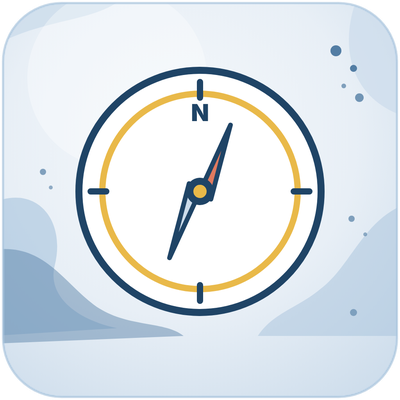
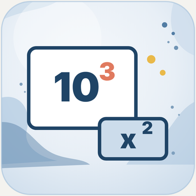
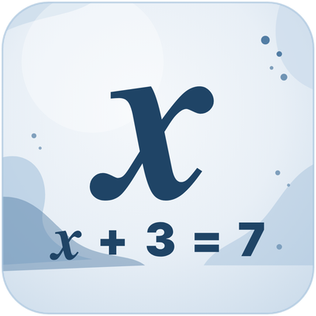
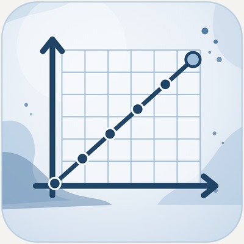
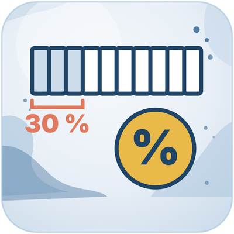
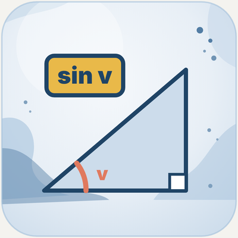
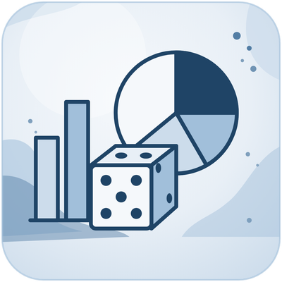

Börja här
Startkoll: Är du redo för gymnasiet?
Blandade frågor om det viktigaste från högstadiet. Se vad du redan kan.
Kommer snartVälj ett område

Område 1
Tal och potenser
Potenser, tiopotenser, grundpotensform och kvadratrötter
Kommer snart
Område 2
Algebra och ekvationer
Uttryck med parenteser, ekvationer, olikheter och formler
Kommer snart
Område 3
Funktioner och grafer
Linjära funktioner, räta linjens ekvation och tillväxt
Kommer snart
Område 4
Procent och förändring
Förändringsfaktor, ränta, lån och upprepade förändringar
Kommer snart
Område 5
Geometri och trigonometri
Pythagoras sats, likformighet och vinklar i rätvinkliga trianglar
Kommer snart
Område 6
Statistik och sannolikhet
Lägesmått, spridningsmått och sannolikhet i flera steg
Kommer snart